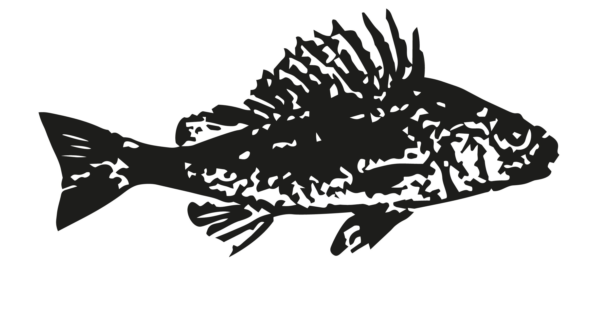

MAAK JE
IDEALEN
WAAR MET
 Strategisch communicatiebureau in Amsterdam
Strategisch communicatiebureau in Amsterdam
Voor organisaties en voor mensen

Buro Stekelbaars realiseert idealen. Wij zijn het strategisch communicatiebureau dat merk en reputatie samenbrengt.
Wij begrijpen als geen ander hoe merken gevormd worden door de buitenwereld. Algoritmes, media, disruptieve technologie en politieke onrust zijn bepalender dan ooit.
Het is verdomd lastig om in deze context je publiek te bereiken en je idealen te realiseren. Maar juist daarom is Buro Stekelbaars opgericht. Wij zijn een nieuw bureau, met een andere aanpak. Dat gelooft dat verandering nog steeds mogelijk is. En daarvoor willen we onze diepgaande kennis en ervaring inzetten.
Ons team werkte in de Nederlandse politieke arena, in reputatiemanagement voor Nederlands’ grootste corporates en aan de redactietafels van prime-time TV. Wij begrijpen wél hoe de buitenwereld jouw merk vormt. En belangrijker: hoe je jouw merk of organisatie binnen die context vorm geeft, tegen de stroom in.
Idealen realiseren begint bij strategie, maar het verschil wordt gemaakt in de uitvoer. De aanpak van Buro Stekelbaars is hierop gericht. Van ideaal naar succes.
werkt aan de idealen van
Een unieke
combinatie
Buro Stekelbaars verenigt twee werelden die elkaar niet vaak kruisen; die van maatschappelijke campagnes en corporate PR. Totdat Dorien en Sebastiaan elkaar ontmoetten.
Dorien had haar eigen PR-bureau (Fitzgerald) en was onder andere head of PR bij ACE PR. Met haar jarenlange ervaring in communicatie en corporate PR, weet ze precies wat er nodig is om niet alleen een goed verhaal te hebben, maar ook om dit effectief te delen met je publiek. Dat deed ze onder andere voor Kruidvat, Jumbo en Uber.
Sebastiaan was onder andere campagnemanager bij de PvdA, hoofd communicatie bij vakbond AOb en werkte voor Greenpeace en het Wereld Natuur Fonds. Ook was hij redacteur bij talkshows DWDD en Pauw. Overal leerde hij hoe belangrijk persoonlijk leiderschap is om echt het verschil te maken. Sebastiaan is gespecialiseerd in narratief-ontwikkeling en hoe je dit gebruikt om je achterban in beweging te krijgen.
Wij hebben Buro Stekelbaars opgericht omdat we aan alles voelden; juist nu willen we onze kennis en ervaring inzetten om het verschil te maken en idealen te realiseren.


En een unieke aanpak

Bij Buro Stekelbaars begint het altijd met de leider van een organisatie. Hij of zij bepaalt immers de koers. Juist in deze tijden maakt degene aan het roer het verschil. Dat doe je altijd samen met het team en altijd gericht op de verschillende arena’s die nodig zijn om succesvol te zijn. Zowel intern als extern. Van media, tot politiek. Van de eigen socials, tot evenementen.
Buro Stekelbaars werkt met het door onszelf ontwikkelde STROOM-model. Gebaseerd op de laatste inzichten en eigen ervaring. Met deze methode ontwikkelen we een narratief, bepalen we de positionering, stellen de strategie op en zorgen we voor een gedisciplineerde uitvoer.
Want idealen waarmaken, is een zaak van de lange adem. Tegen de stroom in. Buro Stekelbaars is het idealistisch communicatiebureau om ze waar te maken.